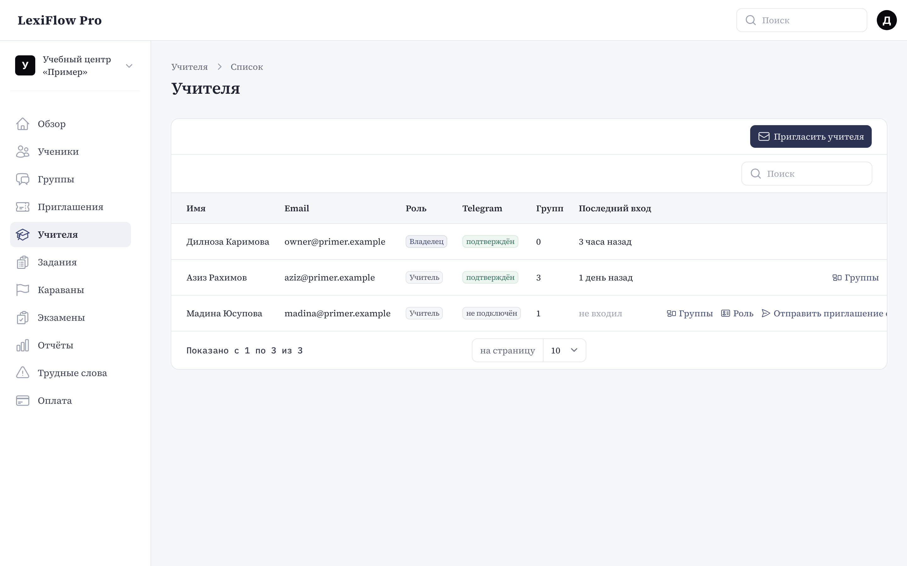
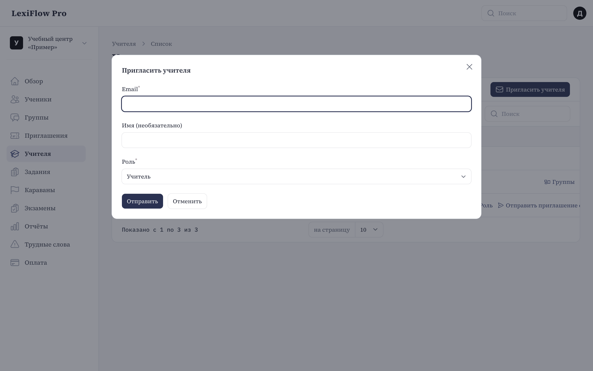
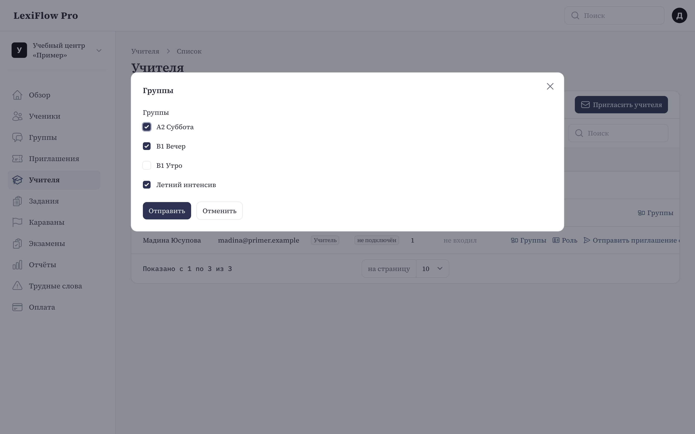
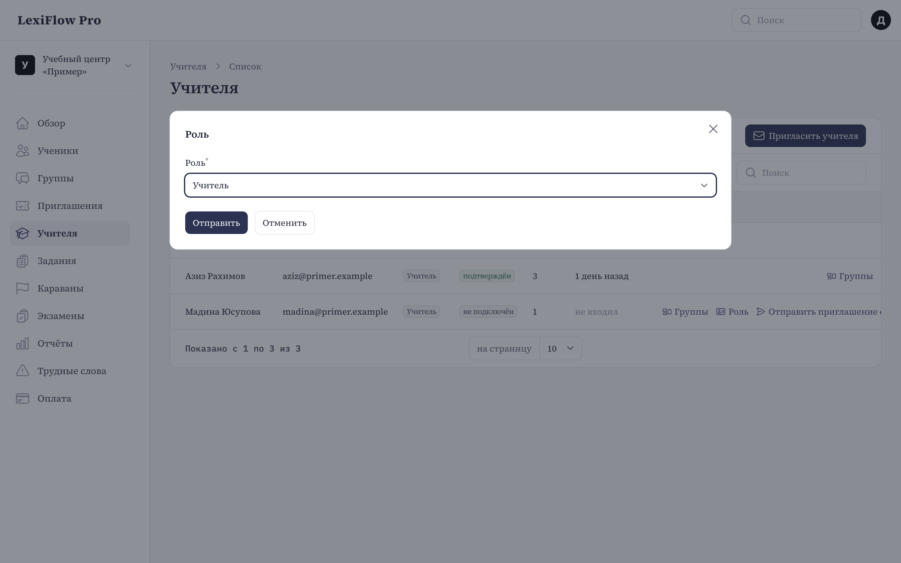

Здесь сотрудники центра: владельцы и учителя. Учитель видит в кабинете только группы, которые ему назначены.
Кто имеет доступ: только владелец.

Рис. 56.1. Сотрудники центра: имя, email, роль, состояние Telegram, число групп, последний вход («не входил» — ещё не открыл приглашение).
Колонка Telegram
Что значит
подтверждён
сотрудник подключил Telegram через бота — команды учителя в группах работают
не подтверждён
Telegram ID был указан вручную; сотруднику нужно подтвердить его в профиле
не подключён
сотруднику нужно подключить Telegram в профиле
Пригласить учителя
«Пригласить учителя» → введите email, при желании имя, выберите роль («Учитель» по умолчанию или «Владелец») → «Отправить».
Сотрудник получит письмо со ссылкой «Задать пароль» (24 часа). Пока он не вошёл, в строке есть действие «Отправить приглашение ещё раз».
Назначьте ему группы (ниже). Telegram сотрудник подключает сам в своём профиле.

Рис. 56.2. Окно «Пригласить учителя».
Назначить группы
Действие «Группы» в строке сотрудника: отметьте группы галочками и нажмите «Отправить». Учитель сразу увидит эти группы, их учеников, задания, экзамены и отчёты; бот начнёт принимать от него команды в этих группах.

Рис. 56.3. Группы учителя Азиза Рахимова.
Владелец, который сам ведёт занятия (например, репетитор), тоже назначает группы себе — иначе он не сможет запускать в них «Караван класса».
Сменить роль и удалить

Рис. 56.4. Действие «Роль»: «Учитель» или «Владелец».
Доступ. Роль «Владелец» открывает всё: оплату, учеников, учителей и настройки центра. Владельцу обязательна двухфакторная защита. «Удалить из центра» сразу закрывает сотруднику доступ к этому центру. В центре всегда должен остаться хотя бы один владелец: последнего владельца понизить или удалить нельзя, а себя удалить кнопкой нельзя.